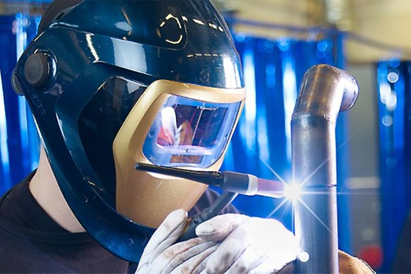

Yrkeshögskola svets
Vill du gå en kort utbildning som leder till jobb med bra lön? Ta chansen att utbilda dig till kvalificerad svetsare! Arbetsmarknaden är mycket god då svetsare under de senaste åren varit ett av de yrken där det råder stor brist på arbetskraft.
Du behövs! Utbildningen startar den 9 september 2024 och pågår i 40 veckor. Vår ansökan öppnar den 13 november 2023 och stänger 28 maj 2024. Efter avslutad utbildning har du de färdigheter som krävs för anställning som kvalificerad svetsare.
Certifierad svetsare med kvalificerad kompetens - en yrkeshögskoleutbildning
Under utbildningens gång kommer du att lära dig kvalificerad svetsning i olika material och med olika metoder, såväl individuellt som i arbetslag. Du kommer också att producera och läsa ritningar samt läsa och förstå men även skriva WPS-er.
Utbildningens start- och slutdatum är 9 september 2024 - 13 juni 2025 och studieformen är bunden i Osby. Omfattningen är 40 veckor (200 yh-poäng) och studietakten är på heltid. Utbildningen är CSN-berättigad och undervisningen sker både på svenska och engelska. Det finns 12 platser och utbildningen är riksrekryterande.
En utbildning som leder till jobb
Efter avslutade studier har du de färdigheter som krävs för anställning inom verkstadsindustrin, energisektorn och spårbunden infrastruktur där stora krav ställs på kompetens och kvalitet. Kvalificerad svetsare är ett arbete med goda framtidsutsikter då efterfrågan på utbildad personal är stor.
Utbildningen leder till följande yrken:
- Kvalificerad svetsare
- Breddad IW-svetsare
- Certifierad svetsare
- Automationssvetsare
- Robotsvetsare
- International Svetsare
Grundläggande behörighet har du om du uppfyller ett av följande:
1. Har en gymnasieexamen från gymnasieskolan eller kommunal vuxenutbildning.
2. Har en svensk eller utländsk utbildning som motsvarar kraven i punkt 1 ovan
3. Är bosatt i Danmark, Finland, Island eller Norge och där är behörig till motsvarande utbildning.
4. Genom svensk eller utländsk utbildning, praktisk erfarenhet eller på något annat sätt har förutsättningar att tillgodogöra dig utbildningen.
Vi söker dig som har ett brinnande intresse för att svetsa och för att arbeta inom verkstadsindustrin, energisektorn eller inom spårbunden infrastruktur. Du är engagerad, noggrann och har en god samarbetsförmåga. Du har också en förmåga att uttrycka dig väl i såväl tal som skrift på svenska och engelska.
Ansökan
Du söker till utbildningen via antagning.se. Du kan också göra en sen anmälan på antagning.se fram till den 15 augusti 2024 om det finns platser kvar. Observera att du även behöver skicka in ett personligt brev och cv via e-post till kontakt@we7.se.
När du gör din ansökan behöver du bifoga följande:
- Kopia på ditt examensbevis
- Intyg om godkända betyg i svenska och engelska (om du inte har en gymnasieexamen)
- Personligt brev och cv
Urval sker löpande, så vänta inte med din ansökan!
Mer information
Har du frågor om utbildningen eller vill ha mer information är du välkommen att kontakta oss på:
E-post: kontakt@we7.se
Telefon: 123-456-789
Vi ser fram emot din ansökan och hoppas att du vill bli en del av vårt team!